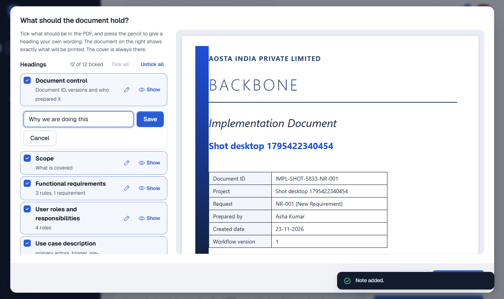

From what the department says to the document the developers need.
Consultants capture how a hospital department works, by typing, voice, photos or files. A free AI structures it into a workflow diagram and a PDF implementation document, for BACKBONE (HMS) implementations by AOSTA India Pvt Ltd.

How it works
- CaptureType, record voice, or add photos and files of the department's own notes.
- AnalyseThe AI turns the notes into steps, rules, requirements and open questions. Every analysis is a version.
- ReviewThe workflow is drawn as a diagram. Answer the open questions, edit, analyse again.
- DocumentOne PDF, laid out like the company's requirement documents, with your headings. The administrator sees the final ones.
Who uses it
Administrator
- Adds users, clients and the modules users can pick (Ward, Pharmacy, Billing...)
- Pastes the free AI key into the app, stored encrypted
- Sees only the documents users mark final
User (consultant)
- Works on assigned clients: Client > Project > Module > request
- Requests are NR (new requirement), CR (change) or BUG
- Makes documents and marks one as final

Run it with Docker
The image holds the API and the web app together, with Chromium for the diagrams and the PDF. It needs SQL Server, so the compose file starts one beside it.
git clone https://github.com/BalachandraDev/FlowBuilderAI.git
cd FlowBuilderAI
cp .env.example .env # set SQL_SA_PASSWORD and JWT_SIGNING_KEY
docker compose -f docker-compose.release.yml up -d
# open http://localhost:8080This page is static, so it cannot run the app: the server and its database are what the Docker image is for. Put the container on a server with HTTPS in front of it to share it with others (recording and installing on a phone need HTTPS).
Source and image
- Source: the repository (.NET 9 API, React web app, tests, documents in
docs/) - Image: GitHub Container Registry, built by GitHub Actions on every push to the main branch